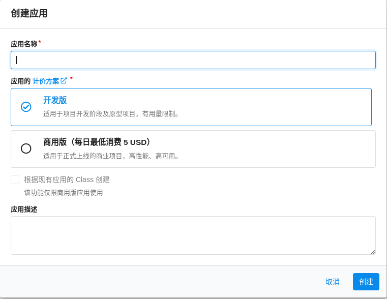
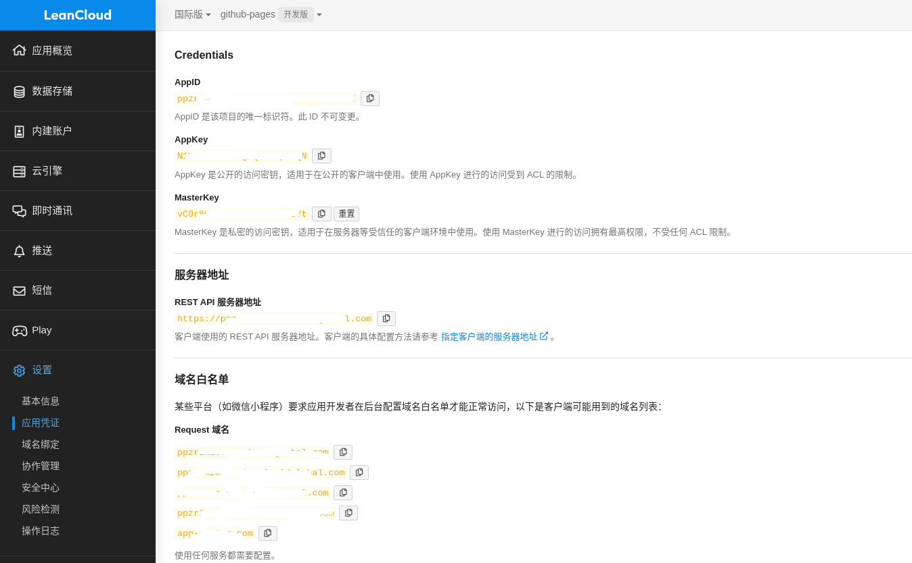
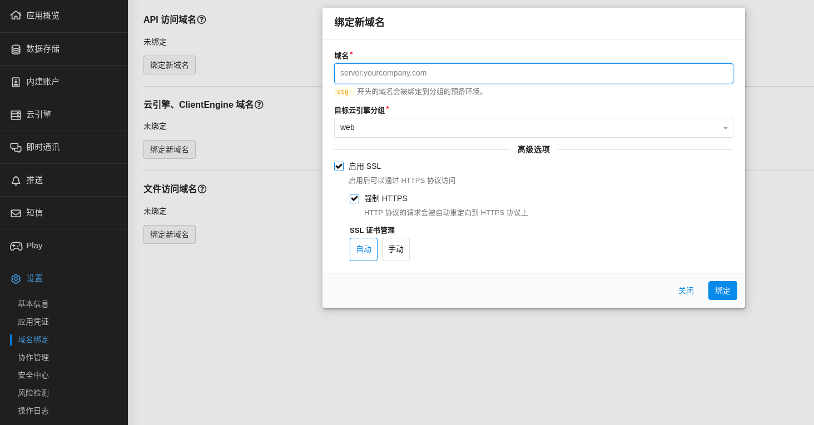
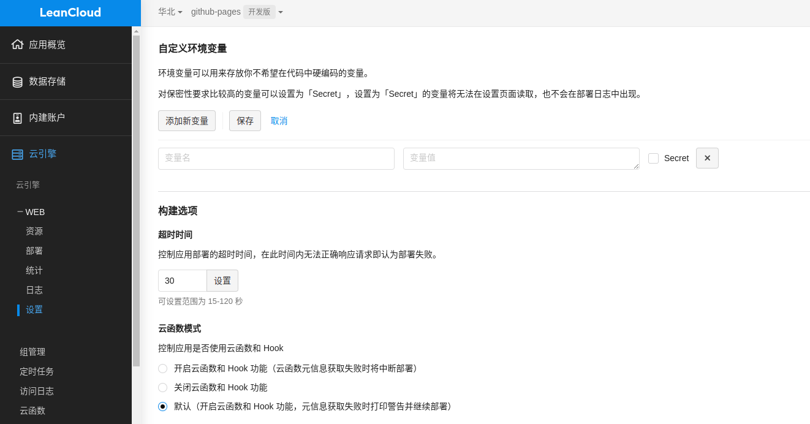
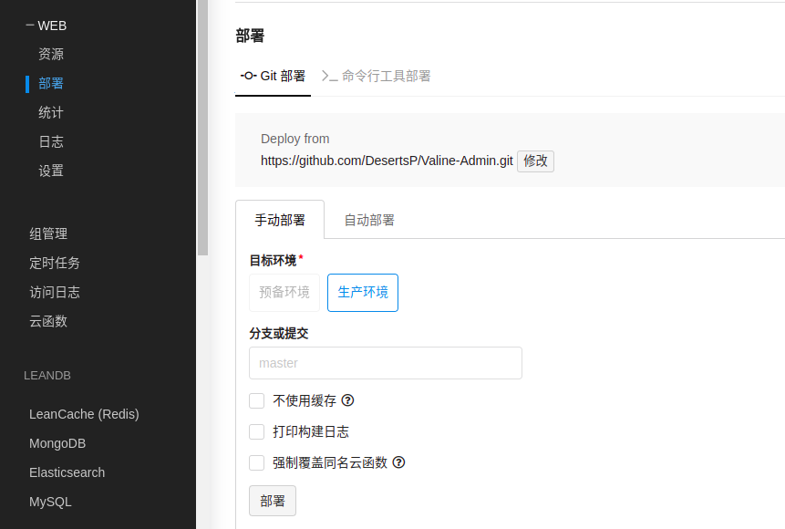

Valine 评论系统
[TOC]
前言
Valine 诞生于2017年8月7日，是一款基于 LeanCloud 的快速、简洁且高效的无后端评论系统。
这是官网 https://valine.js.org/，中文的，写得非常详细
博客引入 valine 评论系统
获取APP ID 和 APP Key
如果自己域名没有备案，就选国际版吧
进入控制台，后点击左上角创建应用

应用创建好以后，进入刚刚创建的应用，选择左下角的设置>应用凭证，然后就能看到你的APP ID和APP Key了：

HTML 片段
修改初始化对象中的appId和appKey的值为上面刚刚获取到的值即可(其他可以默认)。
<head>
..
<script src='//unpkg.com/valine/dist/Valine.min.js'></script>
...
</head>
<body>
...
<div id="vcomments"></div>
<script>
new Valine({
el: '#vcomments',
appId: 'Your appId',
appKey: 'Your appKey'
})
</script>
</body>
配置
修改初始化对象中的appId和appKey的值为上面刚刚获取到的值即可(其他可以默认)。
new Valine({
el: '#vcomments' ,
appId: 'Your appId',
appKey: 'Your appKey'
});
其他详细配置项自己去官网看，https://valine.js.org/configuration.html
npm
Valine 现已发布到npm，可以直接用命令安装：
# Install valine
npm install valine --save
// Use import
import Valine from 'valine';
// or Use require
const Valine = require('valine');
new Valine({
el:'#vcomments',
// other config
})
开启邮件通知
之前自己使用了 valine 评论系统，感觉还不错，但是吧，有人给我评论的话，我需要恰好打开那篇文章才能看到有评论，非常难受。所以需要搞一个通知啊，还好已经有很多大神开发出来了，所以就有了这一章的内容。
官网推荐的是 https://github.com/zhaojun1998/Valine-Admin
但是我选择的是 https://github.com/DesertsP/Valine-Admin，上面那个就是从这 fork 的，而且这个还有评论管理
详细部署方式可参考相关项目 github readme，我这里简单搞一下
准备工作
首先要绑定域名
进入创建的应用，选择左下角的设置>域名绑定，绑定自己的二级域名

如果是国内版，这里的域名必须要备案
部署
进入评论系统数据库所在的LeanCloud应用。进入「云引擎 - WEB - 设置」，设置环境变量

| 变量 | 示例 | 说明 |
|---|---|---|
| SITE_NAME | [必填]博客名称 | |
| SITE_URL | [必填]首页地址 | |
| SMTP_SERVICE | [新版支持]邮件服务提供商，支持 QQ、163、126、Gmail 以及 更多 | |
| SMTP_USER | xxxxxx@qq.com | [必填]SMTP登录用户 |
| SMTP_PASS | ccxxxxxxxxch | [必填]SMTP登录密码（QQ邮箱需要获取授权码，而不是登录密码） |
| SENDER_NAME | [必填]发件人 | |
| SENDER_EMAIL | xxxxxx@qq.com | [必填]发件邮箱 |
| ADMIN_URL | [建议]Web主机二级域名（云引擎域名），用于自动唤醒 | |
| BLOGGER_EMAIL | xxxxx@gmail.com | [可选]博主通知收件地址，默认使用SENDER_EMAIL |
| AKISMET_KEY | [可选]Akismet Key 用于垃圾评论检测，设为MANUAL_REVIEW开启人工审核，留空不使用反垃圾 |
进入「云引擎 - WEB - 部署」，部署模式选择「部署项目-Git部署」，点配置 git，输入 https://github.com/DesertsP/Valine-Admin.git，选生成环境，分支master，点击部署

评论管理
首先需要设置管理员信息。访问管理员注册页面https://云引擎域名/sign-up，注册管理员登录信息
注：使用原版 Valine 如果遇到注册页面不显示直接跳转至登录页的情况，请手动删除_User表中的全部数据。
小结
上面很多东西都是直接从官方原文档摘抄出来的，valine 和 Valine-Admin 都是中文文档，推荐直接去看原文档，我这里只是简单做一下记录，有变化请以官方文档为准
由于个人水平有限，文中若有不合理或不正确的地方欢迎指出改正